Quelques fruits
Abricot
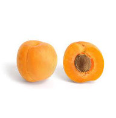
définition: L'abricot est le fruit d'un arbre généralement de petite taille appelé abricotier. C'est un fruit charnu de forme arrondie, possédant un noyau dur contenant une seule grosse graine.
Rôle: Les abricots sont une bonne source de fibres alimentaires (pectines), de potassium et une très bonne source de vitamine A et de vitamine C. Qu'il soit frais ou déshydraté, l'abricot est un aliment alcalinisant.
Amande
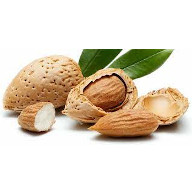
définition: De forme ovoïde, recouverte d'une peau veloutée au toucher, verte et duveteuse, l'amande est un fruit à coque ressemblant à une petite pêche verte, dont la chair reste mince, dure et sèche et ne devient jamais juteuse.
Rôle: L’amande est une graine riche en lipide. Elle est un aliment riche en micronutriments (vitamines et minéraux), particulièrement en vitamine E. Elle est riche en cuivre, manganèse, magnésium et phosphore.
Ananas
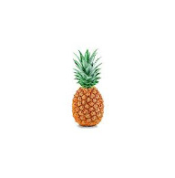
définition: L'ananas est une espèce de plantes xérophytes, c'est une plante tropicale. Sensible au gel, elle requiert un sol bien drainé, riche et acide.
Rôle: Le fruit de l'ananas et son écorce contiennent divers composés phytochimiques, en particulier des polyphénols, incluant l'acide gallique, l'acide syringique, la vanilline, l'acide férulique, l'acide sinapique, l'acide coumarique, l'acide chlorogénique, l'épicatéchine et l'arbutine.
Avocat
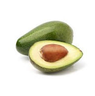
définition: L'avocat est une grosse baie à un seul pépin. Le fruit grossit sur l'arbre, où il peut rester plusieurs mois, mais il ne mûrit qu'une fois cueilli.
Rôle: L'avocat est riche en lipides, en fibres, en sels minéraux, en vitamines et en protides. Les médecines traditionnelles l’utilisaient ou l’utilisent encore contre la ménorragie, l’hypertension, les maux d'estomac, la bronchite, la diarrhée et le diabète. La consommation d'avocats a un effet bénéfique sur le cholestérol sanguin.
Cadjou
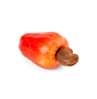
définition: C’est une drupe dont la coque contient une résine caustique et allergisante, avec à l’intérieur une amande comestible qui après avoir subi une série d’opérations de séchage, chauffage, décorticage et torréfaction acquiert toutes ses qualités gustatives.
Rôle: La noix de cajou est assez riche en glucide et en acides gras. La noix de cajou est riche en vitamines et oligo-éléments. Relativement aux apports journaliers recommandés, elle est une bonne source de minéraux, en particulier de cuivre, de manganèse, de magnésium, phosphore, potassium. Elle est une bonne source de vitamine B1, vitamine B6 et vitamine K.
Cassis
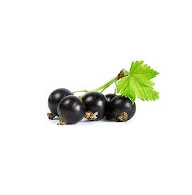
définition: Le cassis est une baie qui est le fruit de l'arbrisseau Cassissier. Les cassis sont des baies le plus souvent noires formant des grappes, pulpeuses, à la peau lisse, fortement aromatiques, surmontées des restes des calices des fleurs dont ils sont issus.
Rôle: Le cassis est utilisé principalement par les industries de transformation (liqueur, sirop, gelée, parfum). Son jus aigrelet est épais, tirant sur le violet. Il est riche en tanins, en arômes, en vitamine C2 et en vitamine C. Le fruit est traditionnellement utilisé pour ses propriétés médicinales, ainsi que comme aliment, et comme aromate de plats et boissons, notamment dans la fameuse crème de cassis.
Cérise
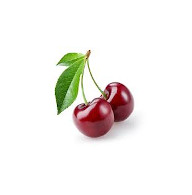
définition: La cerise est le fruit comestible du cerisier. Il s'agit d'une drupe (fruit charnu à noyau), de forme sphérique, de couleur généralement rouge plus ou moins foncé jusque noire, plus rarement jaune. Ce petit fruit compte environ 50 calories pour 100 grammes. La fleur est généralement blanche.
Rôle: La cerise douce est riche en sucre et assez énergétique. C'est une bonne source de fibres alimentaires et de vitamine C. La cerise douce contient des composés phénoliques qui contribuent à son activité anti-oxydante.
Châtaigne

définition: Une châtaigne est formée d'une coque mince, coriace, brune et brillante contenant une graine. La coque est un péricarpe possédant les trois couches classiques de la paroi d'un fruit : épicarpe, mésocarpe et endocarpe. La châtaigne se détache de la bogue par son hile.
Rôle: La châtaigne, qui est un akène, est formée d'une masse farineuse enveloppée d'une écorce lisse de couleur brun rougeâtre appelée le « tan ». La châtaigne fraîche contient du glucides, du fibres, mais est pauvre en protides et en lipides. Elle contient aussi des vitamines, notamment de la vitamine C et des éléments minéraux, notamment du potassium. Le taux de sucre du fruit évolue dans le temps. Il est généralement plus important quelques semaines après la récolte.
Citron
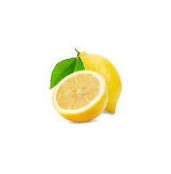
définition: Le citron est un agrume, fruit du citronnier (Citrus limon). Il existe sous deux formes : le citron doux, fruit décoratif de cultivars à jus peu ou pas acide néanmoins classé Citrus limon ; et le citron acide, le plus commun de nos jours, dont le jus a un pH d'environ 2,5.
Rôle: Sa chair est juteuse, le citron acide est riche en vitamine C, avec sa conservation facile . De l'écorce on extrait une huile essentielle qui contient entre autres substances du limonène et du citral.
Clémentine

définition: La clémentine est un agrume, fruit du clémentinier (Citrus clementina), un arbre hybride de la famille des rutacées, issu du croisement entre un mandarinier (Citrus reticulata) et un oranger (Citrus sinensis).
Rôle: La clémentine est riche en fibres, glucides et lipides. Elle est riche en oligo-éléments ( Calcium, Fer, Magnésium) et vitamine C.
Coing
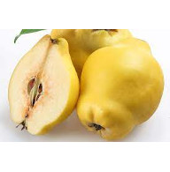
définition: Le coing est le fruit du cognassier (Cydonia oblonga). Piriforme et volumineux, il est cotonneux en surface et, à maturité, il est jaune et très odorant.
Rôle: Les coings sont des fruits acides. Le coing contient très peu de graisses saturées, de cholestérol et de sodium. C'est une bonne source de fibres alimentaires et de cuivre et une très bonne source de vitamine C.
Datte
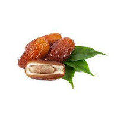
définition: La datte est le fruit comestible du dattier. C'est un fruit charnu, oblong, de 4 à 6 cm de long, contenant un « noyau » allongé, marqué d'un sillon longitudinal. C'est un fruit très énergétique.
Rôle: La datte a une valeur énergétique est de 287 kcal par 100 grammes. Elle est très riche en sucres (glucose, fructose et saccharose), en potassium et contient d'autres sels minéraux (magnésium et calcium). Aussi riche en chrome et en fibres. Elle contient également des vitamines (B2, B3, B5 et B6).
Grenadille
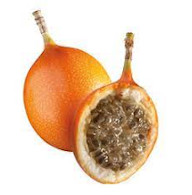
définition: La grenadille, fruit de la passion ou fruit de pourpre (Passiflora edulis), est une plante grimpante vigoureuse, à base ligneuse, de la famille des Passifloraceae.
Rôle: En étant fruit, donc consommable, Elle possède également des propriétés pharmacologiques. Elle intervient dans des activités anti-inflammatoire, anxiolytique et anti-oxydante.
Groseille
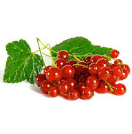
définition: La groseille (aussi appelée raisinet en Suisse romande) est une baie de couleur rouge-rosée. C'est le fruit du groseillier, arbrisseau d’un mètre et demi à port décombant.
Rôle: Les groseilles sont des fruits acides (la variété rouge l'est bien davantage que la blanche). Pour cette raison, elle est généralement employée cuite et additionnée de sucre. La groseille contient de tout en quantité moyenne (fibres, magnésium, calcium, potassium, fer, vitamine C et bétacarotène).
Litchi
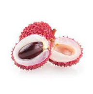
définition: Le fruit est une petite sphère de 3 à 4 cm de diamètre, parfois un peu en forme de cœur, entourée d'une enveloppe assez coriace d'aspect écailleux qui prend une couleur rose à rouge à maturité.
Rôle: Le litchi est un fruit riche en vitamine C, en vitamine B9 et en glucides.
Mandarine
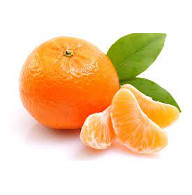
définition: La mandarine est un agrume. C'est le fruit du mandarinier, un arbre de la famille des Rutaceae. Sa chair, sucrée et parfumée, est l'une des moins acides parmi les agrumes, mais elle a de nombreux pépins.
Rôle: Les utilisations de la mandarine sont identiques à celles de l’orange. Elle est notamment appréciée comme fruit de bouche. L’écorce et le jus sont utilisés dans les boissons, en cuisine salée et sucrée.
Mangue
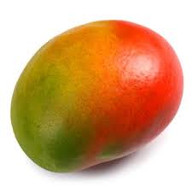
définition: La mangue est le fruit du manguier, grand arbre tropical de la famille des Anacardiaceae. La mangue est un fruit charnu, pesant de 300 g à 2 kg. C'est une drupe, sa chair adhère à un noyau large, plat et glissant.
Rôle: La mangue est riche en glucides, en Fibres alimentaires, en Graisses, en Protéines, en vitamines (A (bêta-Carotène), Lutéine/Zéaxanthine, B1, B2, B3, B5, B6, B9, Choline, C, E, K), en minéraux (Fer, Magnésium, Manganèse, Phosphore, Potassium, Sodium, Zinc)
Myrtille
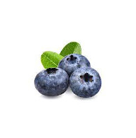
définition: Les myrtilles sont des fruits rouges produits par diverses espèces du genre Vaccinium. Ce sont de petites baies de couleur bleu-violacé à la saveur douce et légèrement sucrée.
Rôle: C'est une des baies les plus légères en sucres et en calories, sa richesse en fibres et en antioxydant lui confère des vertus coupe-faim3, et elle est très diurétique. Riche en vitamines, elle possède des propriétés antiseptiques, antidiarrhéiques, antihémorragiques et antihéméralopiques.
Noisette
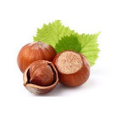
définition: La noisette, parfois appelée « aveline » est l'une des graines oléagineuses les plus riches en acide oléique oméga-9.
Rôle: la noisette commune est intéressante sur le plan nutritionnel par son apport en protéines, en fibres alimentaires, son haut taux potassium/sodium ainsi que par sa richesse en vitamine E et en polyphénols antioxydants.
Noix
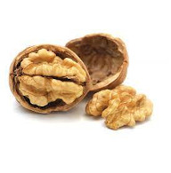
définition: La noix est un fruit comestible à coque. Elle est produite par les noyers.
Rôle: La noix commune est un fruit à coque oléagineux très énergétique. Par rapport aux autres graines oléagineuses, elle se caractérise par sa richesse en acides gras polyinsaturés.
Orange
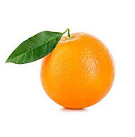
définition: L’orange ou orange douce est le fruit de l'oranger (Citrus sinensis) de la famille des Rutacées. Comme pour tous les agrumes, il s'agit d'une forme particulière de baie appelée hespéride.
Rôle: Elle a presque les mêmes propriétés et même caractéristique que la mandarine. Le plus sucré des agrumes.
Pamplemousse
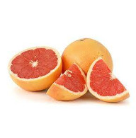
définition: Citrus paradisi est un arbre fruitier nommé pamplemoussier dont le fruit est le pamplemousse en anglais "pomelo".
Rôle: Caractéristique pas loin de celle de l'orange.
Papaye
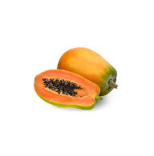
définition: La papaye est une baie ovoïde ou arrondie, de 21 à 31 cm de long, dont la pulpe est comestible. Elle renferme de nombreuses graines noires entourées d'un mucilage.
Rôle: À l'époque précolombienne, les peuples caraïbes employaient le fruit vert en cataplasme contre les zones rougies de la peau et contre les troubles gastro-intestinaux. Pour attendrir la viande crue, ils l'enveloppaient dans des feuilles de papayer avant de la consommer.
Pastèque
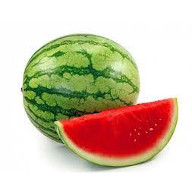
définition: Les pastèques sont des gros fruits lisses, à chair rouge, jaune, verdâtre ou blanche et à graines noires ou rouges. Il faut distinguer la pastèque consommable crue de la pastèque à confiture ou « citre » qui doit être cuite.
Rôle: Composée à 90,9 % d'eau en moyenne, avec des propriétés hydratantes, la pastèque est faible en matières grasses et ne contient pas de cholestérol. Elle contient de nombreux éléments intéressants d'un point de vue nutritionnel, comme la citrulline, qui sert à synthétiser un autre acide aminé capital dans l'organisme, l'arginine, celle-ci jouant un rôle clé dans la division cellulaire, la cicatrisation et l'élimination de l'ammoniaque. La pastèque est surtout réputée pour être riche en antioxydants. Elle contient également quelques vitamines (vitamine C, vitamine B1, vitamine B6 et vitamine A).
Pêche
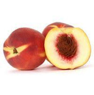
définition: La pêche est un fruit comestible produit par le pêcher. Les pêches sont des fruits climactériques charnus, juteux et sucrés, avec une chair jaune, blanche, ou rouge (sanguine), une peau veloutée de couleur jaune ou orange plus ou moins lavée de rose-carmin à rose-saumon ou brune chez les sanguines, et un noyau dur, adhérent ou non.
Rôle: La pêche nature se déguste crue, cuite, sucrée, salée, flambée, glacée ou déglacée. Elle se marie aussi avec du vin, du canard, de la pintade, de l'huile d'olive, du basilic, de l'estragon, de la menthe, de la cardamome ou du gingembre, du poivre blanc, de la fleur d'aubépine. Les pêches fraîches sont une bonne source de fibres alimentaires, de vitamine A et de vitamine B3 (PP ou niacine), de potassium et une très bonne source de vitamine C.
Poire
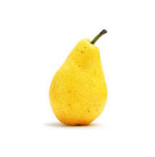
définition: La poire est le fruit à pépins comestible au goût doux et sucré, produit par le poirier , arbre de la famille des Rosaceae. Le fruit est pomacé, c'est-à-dire qu'il comporte à la fois une partie vrai-fruit et une partie faux-fruit. Le vrai-fruit constitue ce qu'on appelle le trognon, tandis que la partie comestible dérive du réceptacle.
Rôle: La poire européenne se consomme le plus souvent à maturité, crue, cuite ou séchée, son jus étant utilisé tel quel et sous la forme fermentée d'un cidre nommé poiré. En Asie orientale, notamment en Chine, Japon et Corée, les poires sont utilisées comme remède populaire traditionnel pour soulager l'alcoolisme, la constipation et la toux.
Pomme
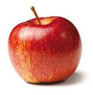
définition: La pomme est un fruit comestible produit par un pommier. un fruit composite car constitué à la fois par l'ovaire, la base des pièces florales et le réceptacle, le tout étant soudé, charnu, de forme quasi sphérique, déprimée au sommet et à la base, à pulpe homogène
Rôle: L'apport énergétique de la pomme (52 kilocalories/100 g, soit 85 kcal pour une pomme de taille moyenne) provient non pas de graisses, mais de fructose et de glucides assimilables lentement par l'organisme. Le profil nutritionnel de la pomme en fait un fruit tout à fait adapté aux sportifs.
Prune
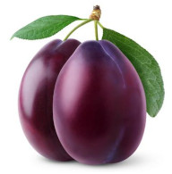
définition: La prune est un fruit à noyau, à chair comestible sucrée et juteuse. Elle est produite par certaines espèces d'arbres classées dans le genre botanique Prunus. Il s'agit d'un fruit à noyau, à peau fine, voire transparente dans certaines variétés, à chair sucrée et juteuse.
Rôle: Les prunes crues sont une bonne source de vitamine A et de vitamine K et une très bonne source de vitamine C.
Raisin
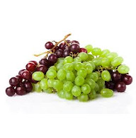
définition: Le raisin est le fruit de la vigne. Sa forte teneur en sucre peut entraîner une cristallisation du sucre avec le temps. Pour décristalliser un raisin, il suffit de le plonger dans un liquide, le temps que le sucre se dissolve.
Rôle: Il sert surtout à la fabrication du vin à partir de son jus fermenté (on parle dans ce cas de raisin de cuve), mais il se consomme également comme fruit, soit frais, le raisin de table, soit sec, le raisin sec qui est utilisé surtout en pâtisserie ou en cuisine. On consomme également du jus de raisin. Des baies, on extrait aussi l'huile de pépins de raisin. Riche en vitamines A, B et C, le raisin contient de nombreux oligo-éléments dans un équilibre parfaitement assimilable par l'organisme. Chaque grain de raisin est recouvert de pruine riche en levures.